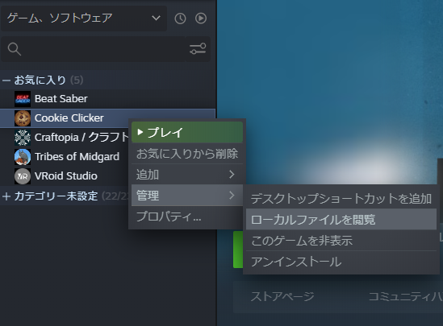
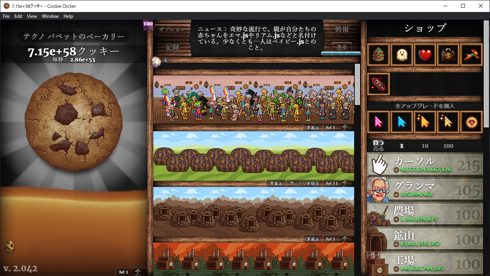

# 開発者ツールを開く
SteamのライブラリからCookieClickerのローカルファイルを開く。 
'Cookie Clicker\resources\app\start.js'を開く。
DEV変数を1に変える。
/*
intruder! intruder! someone breached into the core files!
nah just kidding, just poke around responsibly and try not to break stuff
*/
const {app,BrowserWindow,screen,ipcMain,dialog,shell}=require('electron');
const path=require('path');
const fs=require('fs');
let greenworks;
let greenworksLaunched=false;
let DEV=1;//display menu and js console
let BETA=0;//save and load using different save slot
- CookieClickerを起動すると、開発者ツールが開いた状態で開始される。 
← Modインストール Modに関するAPI →